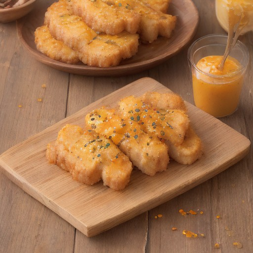

メインディッシュ
極厚カツ × ハニーマスタード：悪魔の甘酸っぱさ！

極厚カツの食感が最高に引き立つ、悪魔的な甘酸っぱさを追求したレシピ！蜂蜜マスタードが、カツに新たな風味が加わる。
💡 こんな時・こんな人におすすめ！
特別な日にも、普段使いにもぴったり！
📋 必要な材料（ポストイット風）
材料リスト 1
- 極厚カツ1個
- ハニーマスタード大さじ3
- 砂糖大さじ2
材料リスト 2
- レモン汁大さじ1
- バター大さじ2
🍳 作り方ステップ
1
極厚カツにハニーマスタードを混ぜ合わせて、両面を包んでから、10分ほど冷蔵庫で冷やす。
2
フライパンにバターを入れ、熱し、カツを両面焼き色がつくまで焼く。
3
カツにハニーマスタードを添えて、砂糖とレモン汁を加え、さらに混ぜ合わせる。
4
お好みで、レモン汁やマスタードを添えて、食べても良い。